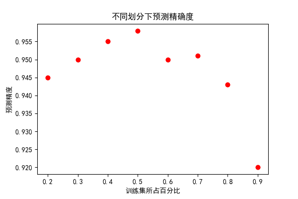

说明
此文案例来自于《机器学习实战》，适合初学机器学习的入门者，要运行本文的实例代码需要安装 numpy、 scikit-learn、matplotlib 以及jupyter，博主使用的是 python2, 所有代码建议在jupyter 下按序运行。
案列背景
有一个舍友A在约会网站上寻找对象，约会网站会推荐不同的人选，但并不是很准确。
通过总结，可以发现A他曾经交往过三种类型的人：
通过长期调查发现，三种人中主要具有以下特征：
- 每年获得的飞行里程数
- 玩视频游戏所耗时间百分比
- 每周消费的冰激凌公升数
于是可以通过这些特征来预测A是否对某一个人感兴趣。
数据集介绍
数据集包含以上三种特征以及评价，共有1000个样本。可以在此处下载。
读取数据集
1 2 3 4 5 6 7 8 9 10 11 12 13 14 15 16
| import numpy as np def get_data_from_file(file_path): dataset = [] labels = [] with open(file_path, 'r') as f: line = f.readline() while line != '': line = line.strip() data = line.split('\t') dataset.append(map(float, data[:3])) labels.append(int(data[-1])) line = f.readline() return np.array(dataset), labels dataset, labels = get_data_from_file('datingTestSet2.txt')
|
样本分布
1 2 3 4 5 6 7 8 9 10 11 12 13 14 15 16
| import matplotlib.pyplot as plt from mpl_toolkits.mplot3d import Axes3D plt.rcParams['font.sans-serif']=['SimHei'] plt.rcParams['axes.unicode_minus']=False def chart(dataset,labels): fig=plt.figure() ax=fig.add_subplot(111,projection='3d') ls = 15.*np.array(labels) ax.scatter(dataset[:,0],dataset[:,1],dataset[:,2],ls,ls,ls,marker='o') ax.set_xlabel(u"飞行里程数") ax.set_ylabel(u"玩游戏时间比") ax.set_zlabel(u"冰激凌消费数") plt.show(chart(dataset,labels) chart(dataset,labels)
|
 

我们可以从样本分布中发现，不同的标签值的样本分布存在着一些规律。这就说明，这三个特征值确实和分类关系密切。
归一化数据
可以发现，飞行里程数相差较大，这时候这一特征对计算结果的影响最大，远远大于其他两个特征。 而这三个特征是同等重要的，因此需要将数值归一化，使其范围转化到0-1区间。
这里采用如下的归一化方法：
```1 2 3 4 5 6 7 8 9 10 11 12
| ```python def autoNorm(dataset): minVal=dataset.min(axis=0) maxVal=dataset.max(axis=0) rngVal=maxVal-minVal m=dataset.shape[0] norm=dataset-np.tile(minVal,(m,1)) norm=norm/np.tile(rngVal,(m,1)) return norm dataset=autoNorm(dataset) print dataset
|
归一化后的数据
1 2 3 4 5 6 7
| [[ 0.44832535 0.39805139 0.56233353] [ 0.15873259 0.34195467 0.98724416] [ 0.28542943 0.06892523 0.47449629] ..., [ 0.29115949 0.50910294 0.51079493] [ 0.52711097 0.43665451 0.4290048 ] [ 0.47940793 0.3768091 0.78571804]]
|
划分数据集
此处选择将数据的50%作为训练集，剩下的50%作为测试集
1 2 3 4 5 6 7 8 9
| div=0.5 train_num=int(len(dataset)*div) dataset_x_train=dataset[:-train_num] dataset_y_train=labels[:-train_num] dataset_x_test=dataset[-train_num:] dataset_y_test=labels[-train_num:]
|
构建KNN分类器
调用 scikit-learn里的 k近邻分类器来实现
1 2 3 4 5 6 7 8
| from sklearn.neighbors import KNeighborsClassifier KNN=KNeighborsClassifier(n_neighbors=5,p=2) KNN.fit(dataset_x_train,dataset_y_train) dataset_y_predict=KNN.predict(dataset_x_test)
|
测试数据
打印出测试集最后的是个数据进行查看：
1 2 3 4 5 6 7 8 9 10
| dataset_y_predict=KNN.predict(dataset_x_test) print("dataset_y_predict=") print (dataset_y_predict[-10:]) print("dataset_y_test=") print(dataset_y_test[-10:]) score=KNN.score(dataset_x_test,dataset_y_test,sample_weight=None) print("accuracy=%f"%score)
|
运行结果
1 2 3 4 5
| dataset_y_predict= [3 2 2 3 2 2 1 3 3 3] dataset_y_test= [3, 2, 2, 2, 2, 2, 1, 3, 3, 3] accuracy=0.958000
|
可以看到，只有第四个预测数据预测错误。
accuracy 为整个测试集的预测准确度。
其他测试
数据集的划分
调整训练集和测试集的划分，训练集从20%到90%
1 2 3 4 5 6 7 8 9 10 11 12 13 14 15 16 17 18 19
| from scipy import interpolate plt.rcParams['font.sans-serif']=['SimHei'] plt.rcParams['axes.unicode_minus']=False div=[0.2,0.3,0.4,0.5,0.6,0.7,0.8,0.9] score=[0.945,0.950,0.955,0.958,0.950,0.951,0.943,0.920] plt.plot(div,score,'ro') fun=interpolate.interp1d(div,score,kind='cubic') line=np.arange(0.2,0.9) yline=fun(line) plt.plot(line,yline,'r') plt.title(u"不同划分下预测精确度") plt.xlabel(u"训练集所占百分比") plt.ylabel(u"预测精度") plt.show()
|

k值的选取
k值从1到10
1 2 3 4 5 6 7 8 9 10 11 12 13 14 15 16 17 18 19 20
| from scipy import interpolate plt.rcParams['font.sans-serif']=['SimHei'] plt.rcParams['axes.unicode_minus']=False k=[1,2,3,4,5,6,7,8,9,10] score=[0.952,0.950,0.958,0.958,0.958,0.958,0.960,0.952,0.956,0.956] plt.plot(k,score,'ro') fun=interpolate.interp1d(k,score,kind='cubic') line=np.arange(1,11) yline=fun(line) plt.plot(line,yline,'r') plt.title(u"不同k值下预测精确度") plt.xlabel(u"k") plt.ylabel(u"预测精度") plt.savefig("k.png",dpi=100) plt.show()
|